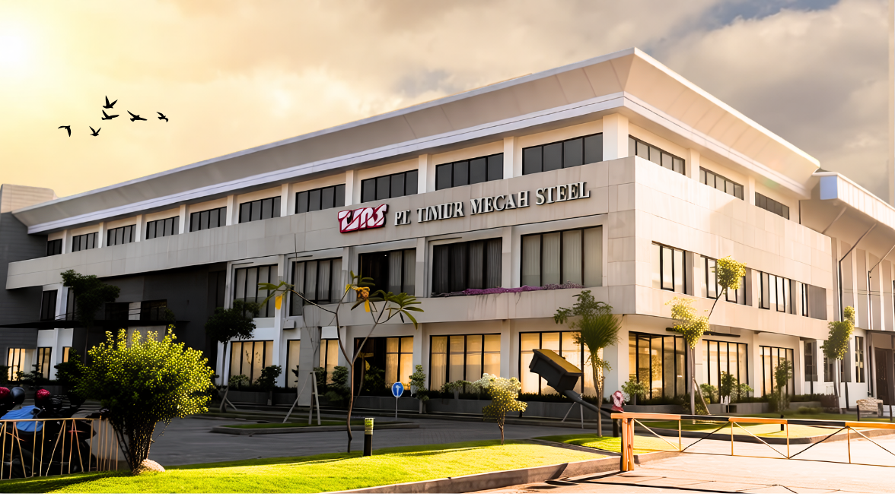

Instrumen HR untuk memantau siklus pertumbuhan karyawan PT Timur Megah Steel — dari kaderisasi, budaya 5R, hingga performa lapangan — supaya setiap program yang dijalankan tepat sasaran dan sesuai kebutuhan aktual.
Setiap karyawan bertumbuh dengan kecepatan dan titik berangkat yang berbeda.
Dashboard ini adalah instrumen HR untuk membaca siklus pertumbuhan itu apa adanya, lalu menjadikannya dasar penyusunan program yang relevan dan sesuai kebutuhan aktual di lapangan — bukan program generik yang dipaksakan sama untuk semua orang.
Penerapan 5R sehari-hari diposisikan sebagai proses mendidik dan membentuk karakter, bukan sekadar penilaian yang menghakimi. Begitu pula proses kaderisasi: dijaga tetap sehat dan berkelanjutan. Bagi HR, keberhasilan program tidak diukur dari angka di atas kertas semata, melainkan dari lingkungan kerja yang tumbuh saling menguatkan.

PT TIMUR MEGAH STEEL — NUT / BOLT / SCREW / WIRE RODSemua yang dibutuhkan tim dan karyawan untuk mengikuti perkembangan program HR, dalam satu portal.
Klasemen 5R League TMS antar zona kerja, dinilai tiap tiga bulan berdasarkan Ringkas, Rapi, Resik, Rawat, Rajin.
Buka dashboard →Progres TTP & TNT, jadwal pelatihan, dan pustaka Instruksi Kerja (IK) untuk tiap lini produk.
Buka Training Center →Data safety induction dan komitmen budaya Keselamatan & Kesehatan Kerja di seluruh area produksi.
Buka Portal K3 →Saluran resmi untuk pertanyaan, keluhan, atau masukan karyawan — termasuk opsi anonim yang dijamin kerahasiaannya.
Hubungi HRD →